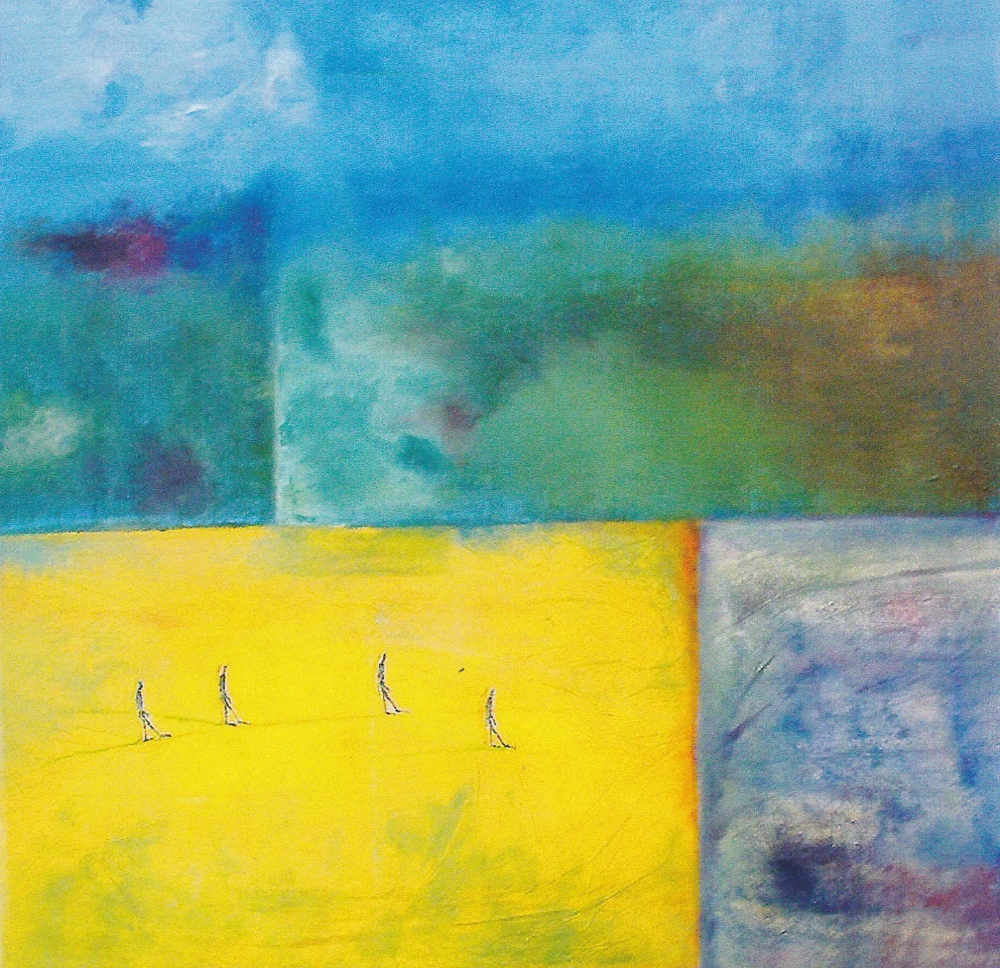
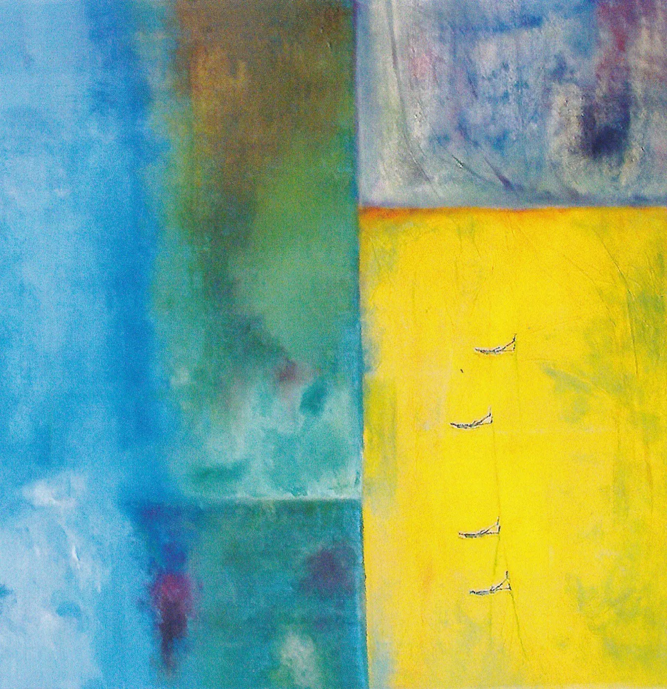
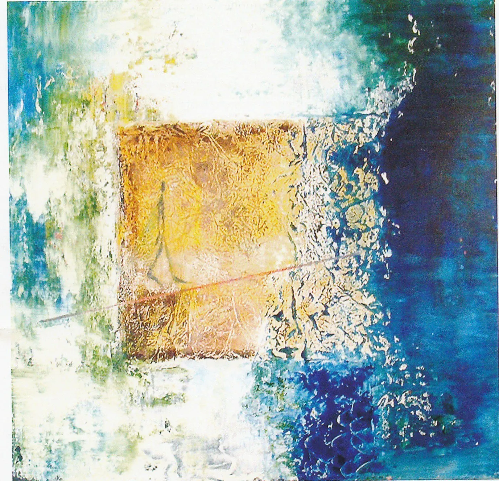
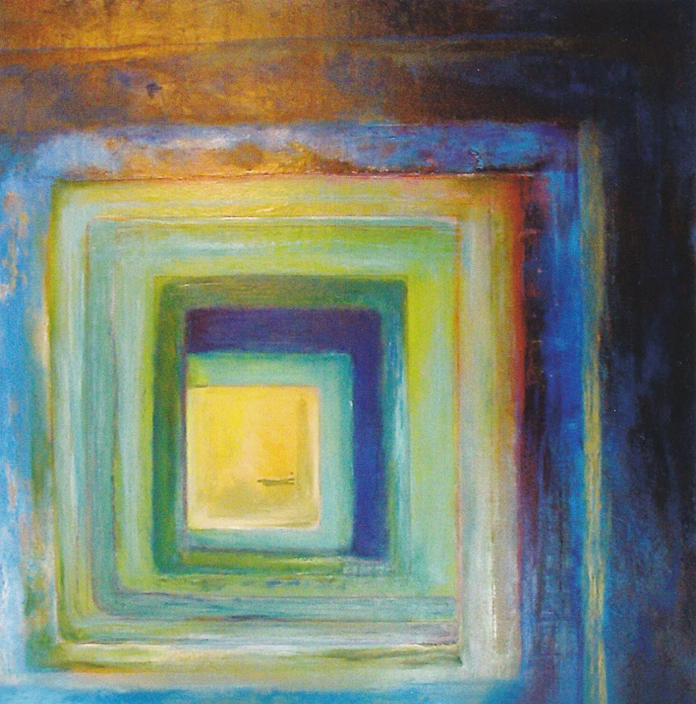

Angles de vie (2005)
Frames, colours and light: figures balancing on the thread of life.
Named Artist of the Year 2004-2005 by the town of Gif-sur-Yvette, Ana Ruiz presented “Angles de vie” (Angles of Life) in the grand salon of the Château de Belleville from 16 June to 3 July 2005.
Frames, colours and light structure the space; figures in balance, among them the enigmatic “Passant”, cross the canvases. “A true hymn to life, Ana Ruiz-Llamazares’s painting is luminous, warm and profound” (Chantal Bulliat-Calès).
Works

Angles de vie I

Angles de vie II

Angles de vie III

Angles de vie IV